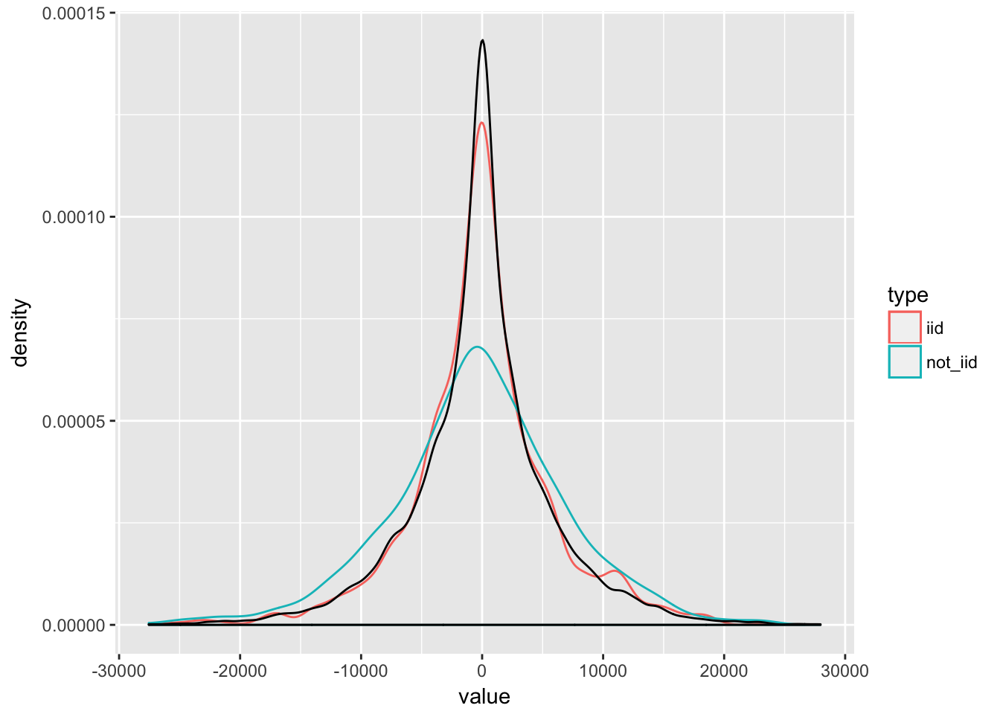

Chapter 6 Bootstrap
- Bootstrap can be summarized as “simulating from an estimated model”
- It is used for inference (confidence intervals / hypothesis testing)
- It can also be used for estimating the predictive power of a model (similarly to cross validation) via out-of-bootstrap generalization error
6.1 Motivation
Consider i.i.d. data. \[ Z_1, .. Z_n \sim\ P \;\; with \; \;Z_i = (X_i, Y_i)\] And assume a statistical procedure \[ \hat{\theta} = g(Z_1, ..., Z_n) \] \(g(\cdot)\) can be a point estimator for a regression coefficient, a non-parametric curve estimator or a generalization error estimator based on one new observation, e.g. \[ \hat{\theta}_{n+1} = g(Z_1, ..., Z_{new}) = (Y_{new} - m_{Z_1, ..., Z_{new}}(X_{new})^2 \] To make inference, we want to know the distribution of \(\hat{\theta}\). For some cases, we can derive the distribution analytically if we know the distribution \(P\). The central limit theorem states that the sum of random variables approximates a normal distribution with \(n \rightarrow \infty\). Therefore, we know \[ \hat{\theta}_{n \rightarrow \infty} = n^{-1}\sum x_i \sim N(\mu_x, \sigma_x^2 / n) \] for any \(P\). However, if \(\hat{\theta}\) is not a sum of random variables, and the CLT does not apply, it’s not as straightforward to obtain the distribution of \(\hat{\theta}\). Also, if \(P\) is not the normal distribution, but some other distribution, we can’t find the distribution of \(\hat{\theta}\) easily. The script mentions the median estimator as an example for which the variance already depends on the density of \(P\). Hence, deriving properties of estimators analytically, even the asymptotic ones only, is a pain. Therefore, if we knew \(P\), we could simply simulate many times and get the distribution of \(\hat{\theta}\) this way. That is, draw many \((X_i, Y_i)\) from that distribution and compute \(\hat{\theta}\) for each draw.
The problem is that we don’t know \(P\). But we have a data sample that was generated from \(P\). Hence, we can instead take the empirical distribution \(\hat{P}\)that places probability mass of \(1/n\) on each observation, draw a sample from this distribution (which is simply drawing uniformly from our sample with replacement) and compute our estimate of interest from this sample. \[ \hat{\theta}^{*} = g({Z_1}^{*}, ..., {Z_{new}}^{*})\] We can do that many times to get an approximate distribution for \(\hat{\theta}\). A crucial assumption is that \(\hat{P}\) ressembles \(P\). If our data is not i.i.d, this may not be the case and hence bootsrapping might be missleading. Below, we can see that i.i.d. sampling ressembles the true distribution quite well, wherease biased sampling obviously does not. We produce a sample that places higher probability mass to the large (absolute) values. 
We can summarize the bootstrap procedure as follows.
- draw a bootstrap sample \({Z_1}^{*}, ..., {Z_{new}}^{*}\)
- compute your estimator \(\hat{\theta}\) based on that sample.
- repeat the first two steps \(B\) times to get bootstrap estimators \(\hat{\theta}_1, ..., \hat{\theta}_B\) and therefore an estimate of the distribution of \(\hat{\theta}\).
Use the \(B\) estimated boostrap estimators as approxmimations for the bootstrap expectation, quantiles and so on. \(\mathbb{E}[\hat{\theta}^*_n] \approx B^{-1}\sum\limits_{j = 1}^n \hat{\theta}^{* j}_n\)
6.2 The bootstrap distribution
With \(P^*\), we denote the boostrap distribution, which is the conditional probability distribution introduced by sampling i.i.d. from the empirical distribution \(\hat{P}\). Hence, \(P^*\) of \(\hat{\theta}^*\) is the distribution that arrises from sampling i.i.d. from \(\hat{P}\) and applying the transformation \(g(\cdot)\) to the data. Conditioning on the data allows us to treat \(\hat{P}\) as fixed.
6.3 Bootstrap Consistency
The bootstrap is is called consistent if \[ \mathbb{P}[a_n(\hat{\theta} - \theta) \leq x ] - \mathbb{P}[a_n(\hat{\theta} - \theta) \leq x ] \rightarrow 0\]